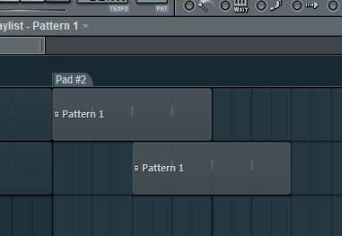
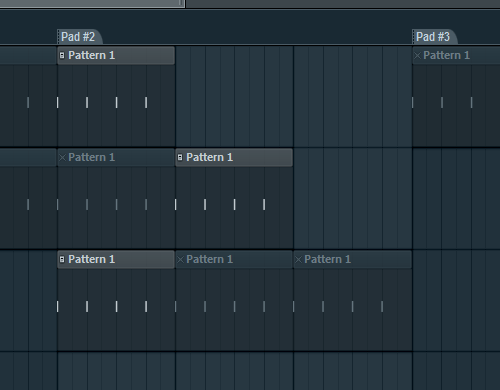
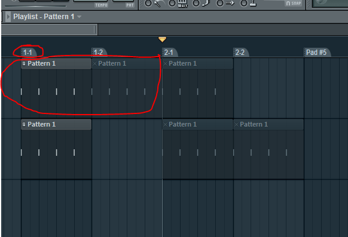

FL Studio live mode and foot controllers
I have just installed the new FL Studio 10.5 beta that includes the new live performance mode. This differs from the old live playlist mode completely. The old live mode just mapped the patterns in the old-style playlist to keys on your midi controller. In a previous post I experimented with using the song marker jump features to switch scenes using a foot controller. I’m going to try for a similar effect using the new stuff from FL.
The biggest difference is that the playlist markers don’t work like they did before when in live performance mode. The idea of a looping region is gone, now the marker is an implicit trigger group that triggers the first clip on each track in the region.
So the key takeaways from playing with the new stuff is that the idea of the first clip on a track vs the following clips is really important. The workflow is very much not timeline based. Clips that are triggered together will play together regardless of how they are positioned on the timeline. Even if they are offset by one beat, as long as they are triggered together they will play in sync. Clicking on a marker will trigger all of the first clips in the region, regardless of where those clips are positioned on the timeline. So don’t think that if the clip isn’t lined up with the marker it won’t play!
In the following screenshot, clicking on the Pad#2 marker will trigger both clips simultaneously:

The clips following the first clip on a track are called sub-clips in FL parlance. These clips can be added to groups but they cannot participate in “marching” which is what FL calls clip-follow mode. Marching is set for the track rather than individual clips, but grouping and markers affect how it operates. This was a confusing bit for me. The manual states that clips in a group will participate in marching but in fact, only the first clips in a region can participate in marching behavior, and after that it is subject to grouping.
This is unfortunate since I want to set up fewer markers/regions and then work within those regions during a song. I’m using a foot controller and not a grid controller, so I’m not going to have that many buttons to work with. I can see if you have a controller with 64 or 128 buttons on it you can be liberal with markers. I also haven’t found a way to increment/decrement the region that is active. Maybe it isn’t even accurate to refer to an “active” region anyway, since really they are just trigger groups. After the initial selection of a region, clips can be activated/deactivated manually and then it is mostly meaningless to refer to the region after that.
The upshot of the way regions work is a little thing I noticed when triggering a region multiple times. The first time you trigger a region it triggers the first clips. Triggering a region subsequent times triggers the next sub-clip on the track. If there are no sub-clips the first clip is just triggered again. This means that we can build combinatorial permutations of clips by cleverly arranging clips in a region.
In the following screenshot the first time we trigger the Pad#2 region, the first clips will be triggered, but the second time the first clip of the first track will be triggered with the second clips of the second and third tracks. The third time will trigger the first clips of the first two tracks with the third clip of the third track, and so on.

Update: I realized from re-reading the manual that this cycling behavior is also subject to grouping. What we see here is the result of cycling through the default group. If we group these up different ways we can control the permutations we get, pretty sweet.
Alternatively I was considering just creating a lot of regions and just informally grouping them, assigning just the first regions in the group to my pedal switches. See the following screenshot:

I would assign regions 1-1, 2-1, etc. to my footswitch and the rest of the markers will be for the purposes of marching clips. Of course, these two techniques could be mixed and matched in the same set.
There are some other things I’m exploring like trigger modes and live playing but I’ll leave those for another post.